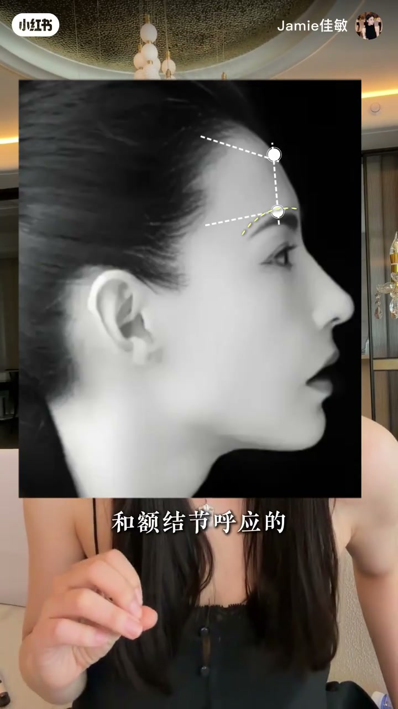
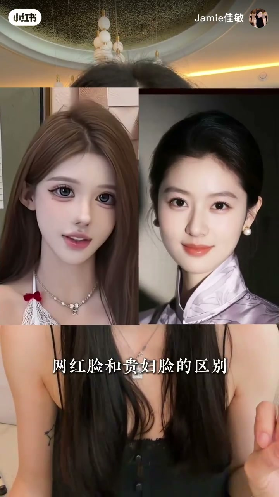
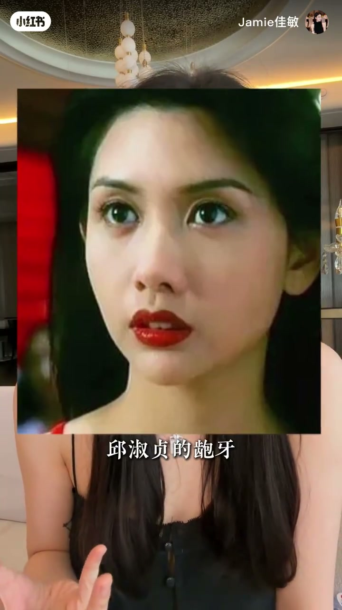

内容要点
一段 116 秒的审美方法论。UP 主直接立论：骨相脸一定大于皮相脸。先给自测法——侧脸比正脸好看、拍照比现实好看就是骨相脸；正脸比侧脸好看、拍照不如本人就是皮相脸。再讲判断标准是面部高光点（立体度）不同，最后给出三点区别：①调整重心不同——骨相讲眉弓转折、颧骨微凸、下颌角有角度，皮相线条柔和平滑；②抗老不同——骨相年龄越大特征越明显，皮相鼻基底凹陷+颧骨低，软组织下垂形成鼻唇沟，三五年必垮；③上镜不同——骨相上镜更好看，保留适当缺陷反而是辨识度（刘亦菲、林青霞等案例）。
知识结构
骨相脸一定大于皮相脸。很多人明明适合骨相风格却做错选择，效果不好维持时间还短；变美前先自测确认风格。
侧脸比正脸好看、拍照比现实好看 = 骨相脸；正脸比侧脸好看、拍照不如本人 = 皮相脸。
骨相与皮相最重要的判断标准是面部高光点（立体度）不同。
皮相眉眼线条柔和、下颌角平滑；骨相眉弓有转折且与额骨阶梯式呼应、颧骨高微凸、下颌角有明显转折。
骨相年龄越大特征越明显、越老越好看；皮相只是暂时好看，鼻基底凹陷+颧骨低→软组织下垂→鼻唇沟，三五年必垮。
骨相上镜更好看，女明星基本都是骨相脸；皮相追求大五官把瑕疵变辨识度，上镜骨相脸保留适当缺陷反而更有辨识度。
判断自己属于骨相还是皮相：侧脸/照片 vs 正脸/真人。骨相脸三大优势——调整重心在骨骼立体度（眉弓、颧骨、下颌角）、越老越好看（骨骼抗挂垂）、上镜更佳（立体光影）；皮相脸线条柔和暂时好看，但易垮易平。上镜骨相脸要保留适当缺陷，缺陷=辨识度。
00:00-00:12开场立题：骨相脸一定大于皮相脸
UP 主一上来就给出强主张：「骨相脸是一定大于皮相脸的」。指出常见误区——很多人明明适合走骨相风格，非要去做别的，「花了米不好看，维持时间还短」。
所以变美前第一步不是动手，而是「确认一下你自己的风格，你到底是适合骨相还是皮相」。鼓励胆小的去评论区发照片自测。
00:12-00:21自测方法：侧脸 vs 正脸
教一个 30 秒自测：「如果你的侧脸比正脸好看，或者拍照比现实好看，那你就是骨相脸。」
反过来说：「如果正脸比侧脸好看，拍照没有本人好看，那你就是皮相脸。」两个标准都指向同一件事——你的美是来自骨骼支撑还是软组织表现。
00:21-00:31判断标准：高光点的不同
为什么通过测试脸就能判断？「因为骨相和皮相最重要的一个判断标准，就是高光点的不同。」
高光点是面部受光时骨骼顶点的表现位置——骨相脸高光点位置高、有支撑，皮相脸高光点平、靠软组织撑起。这是后面所有三点区别的底层原理。
00:31-00:58区别一：调整重心不同
「第一，皮相和骨相调整的重心是不一样的。」皮相脸眉眼线条比较柔和，眉弓不明显、没有立体度。
骨相脸的眉弓立体度和额骨是「阶梯式呼应」的，「是有转折的」。再往下到颧骨——这是很有辨识度的一个点，骨相美女这个位置都比较高、有点微凸。
最后是下颌角：皮相脸下颌角平滑、没有角度；骨相脸「有一个明显的转折，有一个角度」。从侧面一张照片就能看出是皮相还是骨相。

00:58-01:22区别二：抗老不同
「第二，就是抗老的区别。」为什么骨相脸年纪越大越好看？因为「年龄越大，骨相特征就会越来越明显」。现在打造的骨相脸，其实是在给未来三五年留空间。
皮相脸只是暂时好看，「未来三五年它一定会垮，而且垮得越来越厉害」。机理很清晰：皮相脸有鼻基底凹陷的问题，加上颧骨低，「你的软组织就会挂下来，就会形成鼻唇沟」。
01:22-01:56区别三：上镜不同
「最后一个就是上镜的区别。这个没什么争议，一定是骨相上镜更好看。」看所有好看的女明星，哪个不是骨相脸。网红脸和贵妇脸的区别，其实就是皮相和骨相在抗衡。
为什么骨相上镜更好看？「因为大部分的皮相脸追求的都是大五官，把瑕疵变成辨识度」——刘亦菲的头缝鼻、林青霞的下巴、王祖贤的凸嘴，这些不符合主流审美的特征在镜头下是「各有千秋美」。
反例是追求无瑕疵的皮相脸，上镜后「脸立马就变成扁平宽了」。结论：上镜骨相脸「一定要保留适当的缺陷，反而你就会更好看、更有辨识度」。


完整转录（86段）
以下文本由 Whisper medium 模型自动转录，可能存在少量识别误差，已尽可能修正。
股相脸是一定大于皮相脸的
很多人明明适合走股相风格
非要做什么握残大耳朵
花了米不好看维持时间还短
所以各位姐妹
调之前一定要确认一下你自己的风格
你到底适合股相还是皮相
胆子自测的评论区发照片
来 教你们一个自测方法
如果你的侧脸比正脸好看
或者拍照比现实好看
那你就是股相脸
如果正脸比侧脸好看
拍照没有本人好看
那你就是皮相脸
为什么通过测试脸就知道你是股相还是皮相呢
因为股相和皮相最重要的一个判断标准
就是高光点的不同
我跟你们讲一下
股相和皮相最大的差别就三点
看完之后你再决定你自己要走什么风格
第一 皮相和股相调整的重心
它是不一样的
上图 这样的原因是皮相脸
它的眉眼线条是比较柔和的
张国之的眉弓转折
看到没 是不是很明显
再来看一下他们眉弓区别
一个眉弓不明显 没有立体度
一个眉弓的立体度是和额阶阶呼应的
它是阶梯式的 是有转折的
再往下到颧骨
这个是皮相和股相比较有辨识度的一个点
你们去看 所有的股相美女
他们这个位置都是比较高的
有点微凸
你看我这两边是不是也有点凸
还有一个 皮相脸的下颗角
它是平滑的 没有角度的
股相脸就不一样
有一个明显的转折
有一个角度在这
最前面我为什么说侧脸拍张照就知道呢
因为你是皮相还是股相
从侧面就能看得出来
第二 就是K老的区别
为什么我说股相脸年纪越大越好看
因为年龄越大
股相特征就会越来越明显
你现在打造的股相脸
其实就是在给你未来三五年留空间
那皮相脸只是暂时好看
未来三五年它一定垮
而且垮得越来越厉害
因为皮相脸都会有鼻脊里凹陷的问题
再加上你的颧骨低
你的软组织就会挂下来
就会形成鼻唇沟
就现在你们追求的那种皮相脸
只是暂时好看
年轻大了一定会垂下来
最后一个就是上镜的区别
这个没什么争议
一定是股相上镜更好看
你们看我现在镜头下这个状态
以及你们现在看到所有好看的女明星
哪个不是股相脸
再去看一下那些网红脸和贵妇脸的区别
其实就是皮相和股相在抗衡
那为什么股相上镜就是比皮相上镜好看呢
因为大部分的皮相脸都追求的是
大五官把瑕疵变成辨识度
这个很关键很关键
刘亦菲的头风鼻对吧
林清霞的下落
王祖贤的拖嘴秋秋真的爆牙
这些不符合主流审美的特征
但在镜头下他们是美的
各有千秋美的
易梦琳平时拍的视频
脸上有瑕疵吗
你再看上镜
脸立马就变成扁平宽了呀
上镜股相脸一定要保留适当的缺陷
反而你就会更好看更有辨识度
那不知道自己哪种类型的评论区照片